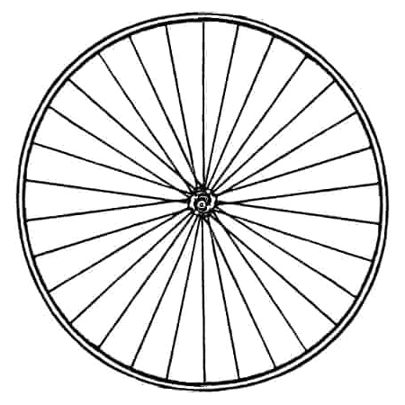
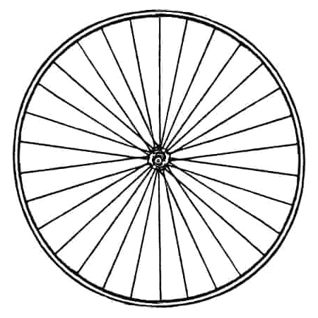

The precursor to the bicycle, the Draisine, was invented by German Baron Karl von Drais. It was a wooden, two-wheeled, steerable machine without pedals, powered by the rider pushing their feet against the ground. This invention, also known as the “Laufmaschine” or “running machine,” was the first two-wheeled vehicle for personal transportation.
In the 1860s, French inventors Pierre and Ernest Michaux developed the first pedal-powered bicycle, known as the Velocipede or “boneshaker.” The pedals were attached directly to the front wheel, and it was made of metal and wood. Due to the rough roads of the time, it earned the nickname “boneshaker” for its uncomfortable ride.


The 1870s saw the rise of the Penny-Farthing, a bicycle with a large front wheel and a much smaller rear wheel. Its design allowed for greater speeds, but it was unstable and difficult to mount and dismount, leading to frequent accidents. This design, though short-lived, became an iconic symbol of early cycling.
 

In 1885, English inventor John Kemp Starley introduced the Rover Safety Bicycle, which featured two equal-sized wheels and a chain drive to the rear wheel. This made cycling safer, more comfortable, and accessible to a broader population. The safety bicycle is considered the ancestor of the modern bicycle, with its revolutionary design leading to the decline of the high-wheeled Penny-Farthing.
In 1888, Scottish inventor John Boyd Dunlop developed the first practical pneumatic tire, filled with air to cushion the ride. This advancement dramatically improved comfort and performance, allowing cyclists to ride faster and more comfortably over uneven surfaces.